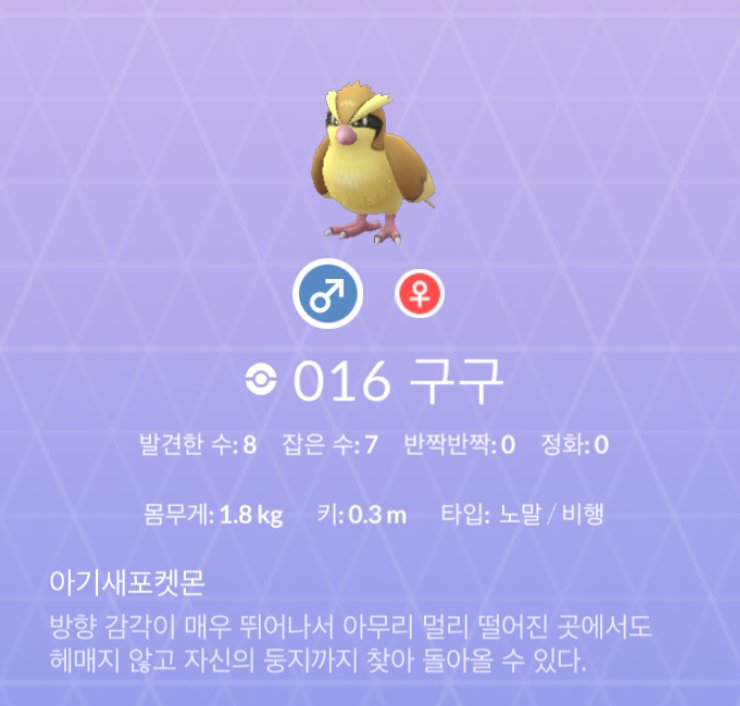
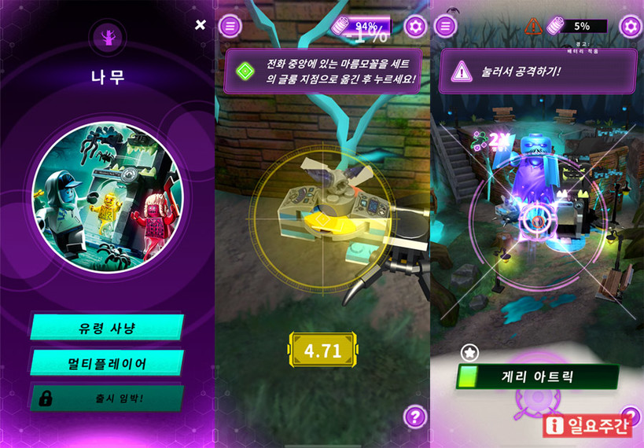
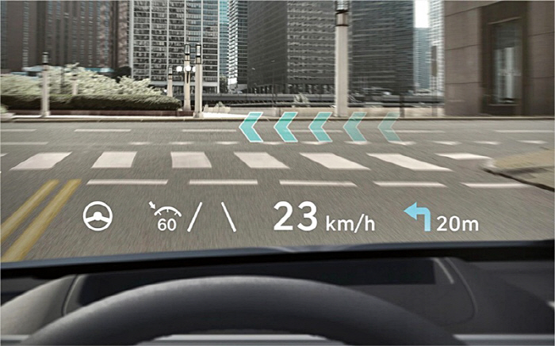
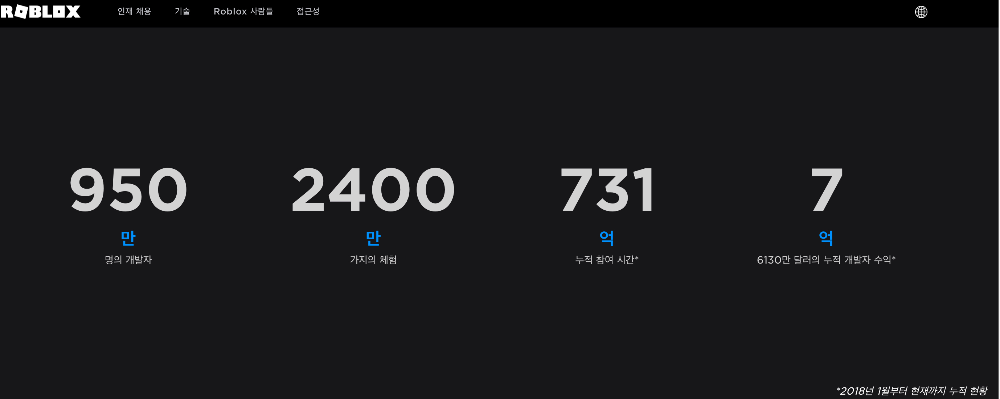

<!DOCTYPE html>
<html lang="en">
<head>
  <meta charset="UTF-8">
<meta name="viewport" content="width=device-width">
<meta name="theme-color" content="#222"><meta name="generator" content="Hexo 6.3.0">

  <link rel="apple-touch-icon" sizes="180x180" href="/images/apple-touch-icon-next.png">
  <link rel="icon" type="image/png" sizes="32x32" href="/images/favicon-32x32-next.png">
  <link rel="icon" type="image/png" sizes="16x16" href="/images/favicon-16x16-next.png">
  <link rel="mask-icon" href="/images/logo.svg" color="#222">

<link rel="stylesheet" href="/css/main.css">

<link rel="stylesheet" href="https://fonts.googleapis.com/css?family=Lato:300,300italic,400,400italic,700,700italic&display=swap&subset=latin,latin-ext">

<link rel="stylesheet" href="https://cdnjs.cloudflare.com/ajax/libs/font-awesome/6.4.0/css/all.min.css" integrity="sha256-HtsXJanqjKTc8vVQjO4YMhiqFoXkfBsjBWcX91T1jr8=" crossorigin="anonymous">
  <link rel="stylesheet" href="https://cdnjs.cloudflare.com/ajax/libs/animate.css/3.1.1/animate.min.css" integrity="sha256-PR7ttpcvz8qrF57fur/yAx1qXMFJeJFiA6pSzWi0OIE=" crossorigin="anonymous">
  <link rel="stylesheet" href="https://cdnjs.cloudflare.com/ajax/libs/fancybox/3.5.7/jquery.fancybox.min.css" integrity="sha256-Vzbj7sDDS/woiFS3uNKo8eIuni59rjyNGtXfstRzStA=" crossorigin="anonymous">
  <link rel="stylesheet" href="https://cdnjs.cloudflare.com/ajax/libs/pace/1.2.4/themes/blue/pace-theme-minimal.css">
  <script src="https://cdnjs.cloudflare.com/ajax/libs/pace/1.2.4/pace.min.js" integrity="sha256-gqd7YTjg/BtfqWSwsJOvndl0Bxc8gFImLEkXQT8+qj0=" crossorigin="anonymous"></script>

<script class="next-config" data-name="main" type="application/json">{"hostname":"assaeunji.github.io","root":"/","images":"/images","scheme":"Muse","darkmode":false,"version":"8.15.1","exturl":false,"sidebar":{"position":"right","display":"hide","padding":18,"offset":12},"copycode":{"enable":false,"style":null},"bookmark":{"enable":false,"color":"#222","save":"auto"},"mediumzoom":false,"lazyload":false,"pangu":false,"comments":{"style":"tabs","active":null,"storage":true,"lazyload":false,"nav":null},"stickytabs":false,"motion":{"enable":true,"async":false,"transition":{"menu_item":"fadeInDown","post_block":"fadeIn","post_header":"fadeInDown","post_body":"fadeInDown","coll_header":"fadeInLeft","sidebar":"fadeInUp"}},"prism":false,"i18n":{"placeholder":"Searching...","empty":"We didn't find any results for the search: ${query}","hits_time":"${hits} results found in ${time} ms","hits":"${hits} results found"}}</script><script src="/js/config.js"></script>

    <meta property="og:type" content="article">
<meta property="og:title" content="&#39;메타버스, 새로운 기회&#39;, 메타버스의 틀을 깨는 책">
<meta property="og:url" content="http://assaeunji.github.io/[object%20Object]/2021-11-03-metaverse/">
<meta property="og:site_name" content="Be Geeky">
<meta property="og:locale" content="en_US">
<meta property="og:image" content="http://assaeunji.github.io/images/metaverse-title.gif">
<meta property="article:published_time" content="2021-11-02T15:00:00.000Z">
<meta property="article:modified_time" content="2023-05-02T14:52:45.508Z">
<meta property="article:author" content="Eunji Lee">
<meta property="article:tag" content="reading">
<meta property="article:tag" content="book">
<meta property="article:tag" content="metaverse">
<meta property="article:tag" content="book-report">
<meta property="article:tag" content="IT">
<meta property="article:tag" content="thought">
<meta name="twitter:card" content="summary">
<meta name="twitter:image" content="http://assaeunji.github.io/images/metaverse-title.gif">


<link rel="canonical" href="http://assaeunji.github.io/[object%20Object]/2021-11-03-metaverse/">


<script class="next-config" data-name="page" type="application/json">{"sidebar":"","isHome":false,"isPost":true,"lang":"en","comments":true,"permalink":"http://assaeunji.github.io/[object%20Object]/2021-11-03-metaverse/","path":"/[object Object]/2021-11-03-metaverse/","title":"'메타버스, 새로운 기회', 메타버스의 틀을 깨는 책"}</script>

<script class="next-config" data-name="calendar" type="application/json">""</script>
<title>'메타버스, 새로운 기회', 메타버스의 틀을 깨는 책 | Be Geeky</title>
  


  <noscript>
    <link rel="stylesheet" href="/css/noscript.css">
  </noscript>
</head>

<body itemscope itemtype="http://schema.org/WebPage" class="use-motion">
  <div class="headband"></div>

  <main class="main">
    <div class="column">
      <header class="header" itemscope itemtype="http://schema.org/WPHeader"><div class="site-brand-container">
  <div class="site-nav-toggle">
    <div class="toggle" aria-label="Toggle navigation bar" role="button">
        <span class="toggle-line"></span>
        <span class="toggle-line"></span>
        <span class="toggle-line"></span>
    </div>
  </div>

  <div class="site-meta">

    <a href="/" class="brand" rel="start">
      <i class="logo-line"></i>
      <p class="site-title">Be Geeky</p>
      <i class="logo-line"></i>
    </a>
  </div>

  <div class="site-nav-right">
    <div class="toggle popup-trigger" aria-label="Search" role="button">
    </div>
  </div>
</div>


<nav class="site-nav">
  <ul class="main-menu menu"><li class="menu-item menu-item-home"><a href="/" rel="section"><i class="fa fa-home fa-fw"></i>Home</a></li><li class="menu-item menu-item-about"><a href="/about/" rel="section"><i class="fa fa-user fa-fw"></i>About</a></li><li class="menu-item menu-item-tags"><a href="/tags/" rel="section"><i class="fa fa-tags fa-fw"></i>Tags<span class="badge">124</span></a></li><li class="menu-item menu-item-categories"><a href="/categories/" rel="section"><i class="fa fa-th fa-fw"></i>Categories<span class="badge">14</span></a></li><li class="menu-item menu-item-archives"><a href="/archives/" rel="section"><i class="fa fa-archive fa-fw"></i>Archives<span class="badge">63</span></a></li>
  </ul>
</nav>


</header>
        
  
  <aside class="sidebar">

    <div class="sidebar-inner sidebar-nav-active sidebar-toc-active">
      <ul class="sidebar-nav">
        <li class="sidebar-nav-toc">
          Table of Contents
        </li>
        <li class="sidebar-nav-overview">
          Overview
        </li>
      </ul>

      <div class="sidebar-panel-container">
        <!--noindex-->
        <div class="post-toc-wrap sidebar-panel">
            <div class="post-toc animated"><ol class="nav"><li class="nav-item nav-level-2"><a class="nav-link" href="#%EB%93%A4%EC%96%B4%EA%B0%80%EB%A9%B0"><span class="nav-number">1.</span> <span class="nav-text"> 들어가며</span></a></li><li class="nav-item nav-level-2"><a class="nav-link" href="#%EB%A9%94%ED%83%80%EB%B2%84%EC%8A%A4%EC%9D%98-%EC%A0%95%EC%9D%98-%EB%B0%8F-%EB%84%A4-%EA%B0%80%EC%A7%80-%EC%9C%A0%ED%98%95"><span class="nav-number">2.</span> <span class="nav-text"> 메타버스의 정의 및 네 가지 유형</span></a><ol class="nav-child"><li class="nav-item nav-level-3"><a class="nav-link" href="#%EC%A0%95%EC%9D%98"><span class="nav-number">2.1.</span> <span class="nav-text"> 정의</span></a></li><li class="nav-item nav-level-3"><a class="nav-link" href="#%EB%A9%94%ED%83%80%EB%B2%84%EC%8A%A4%EC%9D%98-%EB%84%A4%EA%B0%80%EC%A7%80-%EC%9C%A0%ED%98%95"><span class="nav-number">2.2.</span> <span class="nav-text"> 메타버스의 네가지 유형</span></a><ol class="nav-child"><li class="nav-item nav-level-4"><a class="nav-link" href="#%EC%A6%9D%EA%B0%95%ED%98%84%EC%8B%A4-%EC%84%B8%EA%B3%84-augmented-reality"><span class="nav-number">2.2.1.</span> <span class="nav-text"> 증강현실 세계 (Augmented Reality)</span></a></li><li class="nav-item nav-level-4"><a class="nav-link" href="#%EB%9D%BC%EC%9D%B4%ED%94%84%EB%A1%9C%EA%B9%85-%EC%84%B8%EA%B3%84-lifelogging"><span class="nav-number">2.2.2.</span> <span class="nav-text"> 라이프로깅 세계 (Lifelogging)</span></a></li><li class="nav-item nav-level-4"><a class="nav-link" href="#%EA%B1%B0%EC%9A%B8-%EC%84%B8%EA%B3%84-mirror-worlds"><span class="nav-number">2.2.3.</span> <span class="nav-text"> 거울 세계 (Mirror Worlds)</span></a></li><li class="nav-item nav-level-4"><a class="nav-link" href="#%EA%B0%80%EC%83%81-%EC%84%B8%EA%B3%84-virtual-worlds"><span class="nav-number">2.2.4.</span> <span class="nav-text"> 가상 세계 (Virtual Worlds)</span></a></li></ol></li></ol></li><li class="nav-item nav-level-2"><a class="nav-link" href="#%EC%96%BC%EB%A7%88%EB%82%98-%EB%A7%8E%EC%9D%80-%EC%82%AC%EB%9E%8C%EB%93%A4%EC%9D%B4-%EC%99%9C-%EB%A9%94%ED%83%80%EB%B2%84%EC%8A%A4%EC%97%90-%EC%97%B4%EA%B4%91%ED%95%98%EA%B3%A0-%EC%9E%88%EB%8A%94%EA%B0%80"><span class="nav-number">3.</span> <span class="nav-text"> 얼마나 많은 사람들이, 왜, 메타버스에 열광하고 있는가?</span></a><ol class="nav-child"><li class="nav-item nav-level-3"><a class="nav-link" href="#%EC%A7%84%EC%A7%9C%EB%A1%9C-%EB%A9%94%ED%83%80%EB%B2%84%EC%8A%A4%EA%B0%80-%EC%97%B4%ED%92%8D%EC%9D%B8%EA%B0%80"><span class="nav-number">3.1.</span> <span class="nav-text"> 진짜로 메타버스가 열풍인가?</span></a></li><li class="nav-item nav-level-3"><a class="nav-link" href="#%EC%99%9C-%EC%82%AC%EB%9E%8C%EB%93%A4%EC%9D%B4-%EA%B7%B8%EB%A0%87%EA%B2%8C-%EC%A2%8B%EC%95%84%ED%95%98%EB%82%98"><span class="nav-number">3.2.</span> <span class="nav-text"> 왜 사람들이 그렇게 좋아하나?</span></a></li></ol></li><li class="nav-item nav-level-2"><a class="nav-link" href="#%EB%A9%94%ED%83%80%EB%B2%84%EC%8A%A4-%EA%B4%80%EB%A0%A8-%EC%82%AC%EC%97%85-%EA%B7%B8%EB%A6%AC%EA%B3%A0-%EC%A3%BC%EC%8B%9D"><span class="nav-number">4.</span> <span class="nav-text"> 메타버스 관련 사업, 그리고 주식</span></a></li><li class="nav-item nav-level-2"><a class="nav-link" href="#%EB%A7%88%EC%B9%98%EB%A9%B0"><span class="nav-number">5.</span> <span class="nav-text"> 마치며</span></a></li></ol></div>
        </div>
        <!--/noindex-->

        <div class="site-overview-wrap sidebar-panel">
          <div class="site-author animated" itemprop="author" itemscope itemtype="http://schema.org/Person">
  <p class="site-author-name" itemprop="name">Eunji Lee</p>
  <div class="site-description" itemprop="description">Hobby = Specialty</div>
</div>
<div class="site-state-wrap animated">
  <nav class="site-state">
      <div class="site-state-item site-state-posts">
        <a href="/archives/">
          <span class="site-state-item-count">63</span>
          <span class="site-state-item-name">posts</span>
        </a>
      </div>
      <div class="site-state-item site-state-categories">
          <a href="/categories/">
        <span class="site-state-item-count">14</span>
        <span class="site-state-item-name">categories</span></a>
      </div>
      <div class="site-state-item site-state-tags">
          <a href="/tags/">
        <span class="site-state-item-count">124</span>
        <span class="site-state-item-name">tags</span></a>
      </div>
  </nav>
</div>
  <div class="links-of-author animated">
      <span class="links-of-author-item">
        <a href="https://github.com/assaeunji" title="GitHub → https:&#x2F;&#x2F;github.com&#x2F;assaeunji" rel="noopener me" target="_blank"><i class="fab fa-github fa-fw"></i>GitHub</a>
      </span>
  </div>
  <div class="cc-license animated" itemprop="license">
    <a href="https://creativecommons.org/licenses/by-nc-sa/4.0/" class="cc-opacity" rel="noopener" target="_blank"></a>
  </div>

        </div>
      </div>
    </div>

    
  </aside>


    </div>

    <div class="main-inner post posts-expand">


  


<div class="post-block">
  
  <div class="post-gallery" itemscope itemtype="http://schema.org/ImageGallery">
    
    <div class="post-gallery-image">
      
    </div>
    </div>

  <article itemscope itemtype="http://schema.org/Article" class="post-content" lang="en">
    <link itemprop="mainEntityOfPage" href="http://assaeunji.github.io/[object%20Object]/2021-11-03-metaverse/">

    <span hidden itemprop="author" itemscope itemtype="http://schema.org/Person">
      <meta itemprop="image" content="/images/avatar.gif">
      <meta itemprop="name" content="Eunji Lee">
    </span>

    <span hidden itemprop="publisher" itemscope itemtype="http://schema.org/Organization">
      <meta itemprop="name" content="Be Geeky">
      <meta itemprop="description" content="Hobby = Specialty">
    </span>

    <span hidden itemprop="post" itemscope itemtype="http://schema.org/CreativeWork">
      <meta itemprop="name" content="'메타버스, 새로운 기회', 메타버스의 틀을 깨는 책 | Be Geeky">
      <meta itemprop="description" content="제페토, 로블록스만이 메타버스인 줄 알았다면... 이 책을 통해서 메타버스에 대해 더 깊게 이해해보세요. 저 또한 무지함을 느끼고 이 책을 통해서 새로운 미래를 꿈꿔보았습니다.,특히! 메타버스 무슨 주식 사야할지 고민되는 분들, IT 산업 및 신 기술에 관심이 있는 분들, 본인의 회사에서 메타버스를 사부작사부작하고 있는 분들께 이 책을 추천합니다. (그것은 바로 저입니다-!)">
    </span>
      <header class="post-header">
        <h1 class="post-title" itemprop="name headline">
          '메타버스, 새로운 기회', 메타버스의 틀을 깨는 책
        </h1>

        <div class="post-meta-container">
          <div class="post-meta">
    <span class="post-meta-item">
      <span class="post-meta-item-icon">
        <i class="far fa-calendar"></i>
      </span>
      <span class="post-meta-item-text">Posted on</span>

      <time title="Created: 2021-11-03 00:00:00" itemprop="dateCreated datePublished" datetime="2021-11-03T00:00:00+09:00">2021-11-03</time>
    </span>
    <span class="post-meta-item">
      <span class="post-meta-item-icon">
        <i class="far fa-calendar-check"></i>
      </span>
      <span class="post-meta-item-text">Edited on</span>
      <time title="Modified: 2023-05-02 23:52:45" itemprop="dateModified" datetime="2023-05-02T23:52:45+09:00">2023-05-02</time>
    </span>
    <span class="post-meta-item">
      <span class="post-meta-item-icon">
        <i class="far fa-folder"></i>
      </span>
      <span class="post-meta-item-text">In</span>
        <span itemprop="about" itemscope itemtype="http://schema.org/Thing">
          <a href="/categories/Reading/" itemprop="url" rel="index"><span itemprop="name">Reading</span></a>
        </span>
    </span>

  
</div>

            <div class="post-description">제페토, 로블록스만이 메타버스인 줄 알았다면... 이 책을 통해서 메타버스에 대해 더 깊게 이해해보세요. 저 또한 무지함을 느끼고 이 책을 통해서 새로운 미래를 꿈꿔보았습니다.,특히! 메타버스 무슨 주식 사야할지 고민되는 분들, IT 산업 및 신 기술에 관심이 있는 분들, 본인의 회사에서 메타버스를 사부작사부작하고 있는 분들께 이 책을 추천합니다. (그것은 바로 저입니다-!)</div>
        </div>
      </header>

    
    
    
    <div class="post-body" itemprop="articleBody">
        <ul>
<li>제페토, 로블록스만이 메타버스인 줄 알았다면… 이 책을 통해서 메타버스에 대해 더 깊게 이해해보세요. 저 또한 무지함을 느끼고 이 책을 통해서 새로운 미래를 꿈꿔보았습니다.</li>
<li>특히! 메타버스 무슨 주식 사야할지 고민되는 분들, IT 산업 및 신 기술에 관심이 있는 분들, 본인의 회사에서 메타버스를 사부작사부작하고 있는 분들께 이 책을 추천합니다. (그것은 바로 저입니다-!)</li>
<li>제겐 소정의 원고료는 없지만, 진심으로 추천합니다. 책 구매 링크: <a target="_blank" rel="noopener" href="http://www.kyobobook.co.kr/product/detailViewKor.laf?mallGb=KOR&amp;ejkGb=KOR&amp;barcode=9791190242868"><code>[link]</code></a></li>
</ul>
<hr />
<h2 id="들어가며"><a class="markdownIt-Anchor" href="#들어가며"></a> 들어가며</h2>
<p>블로그에 쓰는 첫 책 리뷰입니다!<br />
저는 책 읽는 습관을 갖고 싶다고 항상 소망하지만, 책을 끝까지 읽지 못하는 안 좋은 습관이 있는데요.</p>
<p><br />
모든 책을 반만 읽는 타노스적인 습성<br />
{:figure}</p>
<p>이 책만큼은 달랐습니다. <strong>이틀만에 순삭한 이 책</strong>에 대해서 리뷰를 써보고자 합니다.<br />
이 책은 메타버스에 대해 갖고 있던 짧은 지식을 깨는 좋은 책이었고, 미래가 이렇게 그려질 수 있겠구나 상상할 수 있어서 제게 딱 맞는 책이었습니다.<br />
제 책 취향에 대해 인지하지 못하고 있었는데, 이 책을 좋아했던 것을 보아 상상의 나래를 펼칠 수 있는 미래 지향적인 책을 좋아하는 것 같아요.</p>
<p>제가 이 책을 통해 소개하고 싶은 내용은 아래와 같이 세 가지입니다.</p>
<ul>
<li>메타버스의 정의 및 네 가지 유형</li>
<li>얼마나 많은 사람들이, 왜, 메타버스에 열광하는가</li>
<li>메타버스 관련한 사업</li>
</ul>
<p>특히, 메타버스에 대해 많이 들어봤지만 체감하고 있다곤 말하기 어려웠는데, 이 글을 읽고 나면 <strong>얼마나 많은 사람들이, 왜, 메타버스에 열광하고 있는지</strong>에 대해 힌트를 얻어가실 수 있을 것 같습니다.</p>
<hr />
<h2 id="메타버스의-정의-및-네-가지-유형"><a class="markdownIt-Anchor" href="#메타버스의-정의-및-네-가지-유형"></a> 메타버스의 정의 및 네 가지 유형</h2>
<h3 id="정의"><a class="markdownIt-Anchor" href="#정의"></a> 정의</h3>
<blockquote>
<p>메타버스는 <strong>아바타가 살아가는 디지털 지구</strong>입니다.</p>
</blockquote>
<p>메타버스는 Meta + Universe가 합쳐진 용어로 1992년의 Snowcrash라는 소설에서 처음 등장한 말이라고 하는데요. (유퀴즈에서 첫 도입부 너낌 ㅎㅎ)<br />
이 글의 저자이신 김상균님은 위 정의와 같이 메타버스를 정의합니다. 정의를 하나씩 파헤쳐보면 다음과 같습니다.</p>
<ul>
<li><strong>아바타가</strong>: 아바타 (Avatar)는 산스크리트어로 &quot;하강&quot;을 의미하여, <strong>지상으로 하강한 신</strong>의 모습을 일컫는다 말합니다. 신이란 고로 인간과 소통하기 어려운 존재인데, 이런 &quot;아바타&quot;는 평범한 닝겐들과 소통의 벽을 허무는 신이었던 것이죠. 결국 아바타는 <strong>소통</strong>의 의미를 담고 있습니다.</li>
<li><strong>살아가는 디지털 지구</strong>: 이러한 아바타들이 삶을 영위할 수 있는 디지털 지구가 바로 메타버스입니다. 즉, 생산적인 활동 (심지어 경제적인 활동까지도)을 디지털 세계 속에서 가능하게 하는 곳이 메타버스라 말할 수 있습니다.</li>
</ul>
<p>결과적으로 이 정의를 종합해보면, 디지털 지구라는 곳에서 소통을 하면서 생산적인 활동을 할 수 있는 곳. 바로 그 곳이 메타버스입니다.</p>
<hr />
<h3 id="메타버스의-네가지-유형"><a class="markdownIt-Anchor" href="#메타버스의-네가지-유형"></a> 메타버스의 네가지 유형</h3>
<p>실상 위 정의만으로 메타버스가 어떻게 그려질지 잘 와닿지 않았는데요. 이 네 가지 유형을 알고나니 **“오호라, 이런 것도 메타버스라 볼 수 있구나”**라고 이해할 수 있었습니다.<br />
제가 생각하고 있었던 제페토나 로블록스와 같은 메타버스는 정말 &quot;좁은 의미&quot;의 메타버스이고, 사실상 &quot;넓은 의미&quot;로 보면 현존하는 더 많은 플랫폼이 메타버스였습니다.</p>
<p>메타버스는 다음과 같이 네 가지 유형으로 나뉩니다. (<a target="_blank" rel="noopener" href="https://ko.wikipedia.org/wiki/%EB%A9%94%ED%83%80%EB%B2%84%EC%8A%A4#%EC%A6%9D%EA%B0%95%ED%98%84%EC%8B%A4(Augmented_Reality)">위키피디아</a>에 따르면 이는 비영리 기술 연구 단체 ASF라는 곳에서 정의했다고 하네요!)</p>
<ol>
<li>증강현실 세계 (Augmented Reality)</li>
<li>라이프로깅 세계 (Lifelogging)</li>
<li>거울 세계 (Mirror Worlds)</li>
<li>가상 세계 (Virtual Worlds)</li>
</ol>
<hr />
<h4 id="증강현실-세계-augmented-reality"><a class="markdownIt-Anchor" href="#증강현실-세계-augmented-reality"></a> 증강현실 세계 (Augmented Reality)</h4>
<p>먼저 <strong>증강현실 세계</strong> (Augmented Reality)의 대표적인 예는 포켓몬 고죠!<br />
겨울에 손장갑 없이 덜덜 떨면서 구구를 잡던 추억이 있는데요.<br />
지금 와서 보면 무슨 의미가 있는가 싶지만, 포켓몬 고가 처음 출시되었을 때의 파급력은 대단했습니다.<br />
{: width=“300”, height=“300”}</p>
<p>비단 게임뿐 아니라, 현실에 디지털을 입혀서 증강된 현실 경험을 얻어주는 것 또한 메타버스라 볼 수 있습니다.<br />
좋은 예로 떠오른게 레고 회사에서 레고를 조립하면 핸드폰 어플로 조립한 레고와 관련한 증강현실을 보여주는 게 있는데요. (<a target="_blank" rel="noopener" href="http://m.ilyoweekly.co.kr/news/newsview.php?ncode=1065606322197033"><code>[link]</code></a>)</p>
<p>{: width=“400”, height=“300”}</p>
<p>이렇게 레고를 조립한 후에 스마트폰 카메라를 레고 블록 위에 대면 레고가 살아나고 본격적인 AR 세계가 펼쳐진다고 합니다.<br />
이처럼, 증강 현실이 완전한 현실 세계라 볼 수는 없다는 점에서 &quot;디지털 지구&quot;의 한 면을 담고 있고, 정보들을 준다는 점에서 &quot;소통&quot;의 의미도 갖고 있기 때문에 메타버스에 속한다 생각이 들었습니다.</p>
<p>이 외에도 교육적인 목적으로 조립시 시뮬레이션을 하는데 증강현실을 이용할 수도 있기도 하여 포켓몬 고 외에도 확실히 쓰임새가 많은 것 같습니다.</p>
<hr />
<h4 id="라이프로깅-세계-lifelogging"><a class="markdownIt-Anchor" href="#라이프로깅-세계-lifelogging"></a> 라이프로깅 세계 (Lifelogging)</h4>
<p>두 번째로, <strong>라이프로깅 세계</strong> (Lifelogging)입니다. 이의 대표적인 예시는 인스타그램과 같은 SNS입니다.<br />
저자는 SNS에 정보나 기록을 올리는 일은 완전하게 현실이라고 보기 어려운 <strong>판타지적 요소</strong>가 가미된 것이라고 말합니다.<br />
판타지적인 이유는 본인이 다른 사람에게 보여주고 싶은 순간은 빼고, 피드백을 받고 싶은 순간만을 가공하여 다른 사람들에게 공유하기 때문인데요.<br />
개인적으로 이 말이 되게 와닿았습니다.</p>
<blockquote>
<p>메타버스는 현실의 나에서 보여주고 싶지 않은 나를 빼고 이상적인 나를 더한 세계이다.</p>
</blockquote>
<p>“소통”, 그리고 &quot;디지털 지구&quot;라는 것을 비추어보면 영락없이 SNS도 메타버스의 일종이라 볼 수 있는 것이죠.</p>
<p>또한, 현재 SNS 시장이 포화상태이기 때문에 &quot;라이프로깅 세계&quot;는 더이상 발전 가능성이 없는 건 아닐까, 이미 개발이 끝난 시장이 아닐까? 에 대한 답은 <strong>NO</strong>라고 말합니다.</p>
<p>SNS는 사용자가 직접 기록하는 세계이지만, 제 가상 비서가 제가 봤던 영화 목록, 도로 주행 길, 수면 패턴 등을 기록하는 세계라면 이야기가 달라집니다.<br />
전자는 사용자가 능동적으로 라이프로깅을 한다면, 후자는 사용자가 수동적으로 라이프로깅을 하는 방법이죠.<br />
이렇게 수동적으로 사용자가 참여하는 라이프로깅 세계는 제각각 존재 하곤 있지만 (영화 목록 - 넷플릭스, 도로 주행길 - 네비게이션, 수면 패턴 - 애플워치 등), 통합적인 플랫폼은 존재하지 않기 때문에 여전히 발전 가능성이 높다 볼 수 있습니다.</p>
<hr />
<h4 id="거울-세계-mirror-worlds"><a class="markdownIt-Anchor" href="#거울-세계-mirror-worlds"></a> 거울 세계 (Mirror Worlds)</h4>
<p>세 번째로, <strong>거울 세계</strong> (Mirror Worlds)입니다. 이의 대표적인 예는 배달의 민족입니다.</p>
<p><br />
치-멘!<br />
{:figure}</p>
<p>그래, SNS까지는 메타버스로 치는데 배민도 메타버스라고? 생각하며 이 내용을 읽었습니다.</p>
<p><strong>거울 세계</strong>란 현실의 세계를 복사하되, 효율성과 확장성을 더해 전보다 더 많은 정보를 간편하게 처리하는 체계입니다.<br />
따라서, 배민 어플도 현실에 있는 다양한 음식점들을 복사했지만, 사람들의 평점 정보 및 메뉴판과 같은 배달에 필수적인 정보들을 더해서 많은 정보들을 처리할 수 있도록 도와줬다는 점에서 거울 세계라 볼 수 있고, 메타버스의 일종이라 볼 수 있는 것이죠.</p>
<p>이 외에도 차 유리창에 비쳐 방향과 차 속도와 같은 정보를 확인할 수 있는 Head UP Display (HUD)도 거울 세계라 볼 수 있습니다.</p>
<p><br />
제 드림카인 아이오닉5에 적용된 HUD입니다!! (사진 링크: <a target="_blank" rel="noopener" href="https://www.mk.co.kr/news/business/view/2021/04/406753/"><code>[link]</code></a>)<br />
{:figure}</p>
<hr />
<h4 id="가상-세계-virtual-worlds"><a class="markdownIt-Anchor" href="#가상-세계-virtual-worlds"></a> 가상 세계 (Virtual Worlds)</h4>
<p>이제서야 제가 생각했던 메타버스가 나옵니다. 사람들에게 가장 친숙한 메타버스인 <strong>가상 세계</strong>인데요. 이 가상 세계는 현실에 존재하지 않는 다른 사이버 공간을 구축한 것을 의미합니다.<br />
그런데, 제페토나 로블록스 외에도 WoW, 포트나이트, 리니지와 같은 게임도 가상 세계에 속한다 합니다 (WoW!)<br />
생각해보면  게임, 특히 RPG 게임에는 (잘 읽지는 않지만) 독특한 세계관이 심어져 있고 이를 사이버 공간에 구축했으니 가상 세계인 메타버스라 볼 수 있는 것입니다.</p>
<p>이처럼, 가상 세계는</p>
<ul>
<li>게임 형태의 가상 세계와</li>
<li>비게임 형태 (즉 커뮤니티성)의 가상 세계</li>
</ul>
<p>로 분류된다 합니다.</p>
<hr />
<h2 id="얼마나-많은-사람들이-왜-메타버스에-열광하고-있는가"><a class="markdownIt-Anchor" href="#얼마나-많은-사람들이-왜-메타버스에-열광하고-있는가"></a> 얼마나 많은 사람들이, 왜, 메타버스에 열광하고 있는가?</h2>
<p>제가 &quot;메타버스&quot;에 대해 처음 들었을 때 가장 큰 궁금증 중 하나는 바로 이 두 내용이었습니다.</p>
<ul>
<li>사람들이 메타버스에 열광한다고 하는데 주변에 로블록스나 제페토를 하는 사람이 없다보니 진짜로 메타버스가 열풍인가?</li>
<li>열풍이라면 왜 그렇게 사람들이 좋아하는지?</li>
</ul>
<p>이 파트에서는 &quot;가상 세계&quot;로서의 메타버스 특히 <strong>로블록스</strong>와 <strong>제페토</strong>를 중심으로 그 내용을 말씀드리고자 합니다.</p>
<h3 id="진짜로-메타버스가-열풍인가"><a class="markdownIt-Anchor" href="#진짜로-메타버스가-열풍인가"></a> 진짜로 메타버스가 열풍인가?</h3>
<p>우선, 로블록스로 보면 <strong>월 1억 5천만 명</strong>의 활성 유저수를 갖고 있다고 합니다. 이게 어느 정도냐 하면</p>
<ul>
<li>전 세계 인구가 약 78억 7.5천만 명이니 **전 세계의 2%**를 차지하는 숫자이며,</li>
<li>전 세계 청년 인구 (만 15세 ~ 25세)가 약 18억이니 **청년 인구의 8%**를 차지하는 숫자입니다.</li>
<li>옆 동네 대표적인 게임 리니지 M의 4월 유저수는 약 18.8만 명이니까 (<a target="_blank" rel="noopener" href="https://biz.chosun.com/site/data/html_dir/2021/04/11/2021041100233.**html**"><code>[link]</code></a>), <strong>리니지M의 800배</strong> 정도의 유저수를 가지고 있는 것입니다.</li>
</ul>
<p>미국의 경우, 16세 미만 청소년 인구의 55%가 로블록스에 가입했다 합니다.</p>
<p>제페토 또한 전체 2억 명의 이용자를 가졌고, 이 중 90%가 해외에서 접속한다고 합니다. <a target="_blank" rel="noopener" href="https://www.mk.co.kr/news/economy/view/2021/04/333917/"><code>[link]</code></a><br />
생각보다 많은 수치라 생각이 듭니다.</p>
<h3 id="왜-사람들이-그렇게-좋아하나"><a class="markdownIt-Anchor" href="#왜-사람들이-그렇게-좋아하나"></a> 왜 사람들이 그렇게 좋아하나?</h3>
<p>저도 게임 회사 직원으로서 한번 제페토를 왜 하나 궁금해서 해보았는데 생각보다 재밌고, 귀여웠습니다. <sup>그것이 타이틀에 있는 괴랄한 춤의 정체!</sup></p>
<p>친구는 만들지 않고 염탐만 하였지만, 적어도</p>
<ul>
<li>내 아바타를 예쁘게 꾸밀 수 있다는 점</li>
<li>현실에서 못 추는 아이돌 춤을 신나게 출 수 있다는 점</li>
</ul>
<p>이 두 개에 빠져 한 이틀 간 제페토를 구경했던 것 같아요. 이런 &quot;아이돌 춤&quot;에서 볼 수 있듯이 메타버스에서는 이상적인 나를 더한 세계라는 것이 더 와닿습니다.</p>
<p>이 책에서는 조금 더 깊이 들어가서 왜 사람들이 메타버스에 열광하는지 다음과 같이 설명합니다.</p>
<ul>
<li><strong>인정 욕구</strong>를 풀고자 가상현실을 갈망</li>
<li>인간의 본질 중 하나인 <strong>재미</strong>를 느낄 수 있는 공간</li>
<li><strong>경제적 흐름</strong>을 통해 돈을 벌 수 있는 구조</li>
</ul>
<p>메타버스는 자신을 아바타로 표현하면서 쉽게 성취감을 느낄 수 있고 인정 욕구를 채울 수 있는 세계입니다. 또한, 물리적인 접촉은 없으나 아바타를 통해서 실재감을 느낄 수 있기 때문에 &quot;재미&quot;를 느낄 수 있는 공간이라 말합니다. 특히, 가상 세계에서는 현실에서 이룰 수 없는 여러 감각적 자극을 제공하고 몰입감을 느낄 수 있도록 하기 때문에 그 재미는 극대화 된다고 이야기합니다. 제 생각에도 이 두 가지 부분에 대해서는 이해가 되었습니다. 제페토 안에서 춤을 추면서 현실에서 느낄 수 없었던 재미를 느꼈던 저를 보고 말이죠!</p>
<p>그런데, 메타버스에서 <strong>경제적 흐름을 통해 돈을 벌 수 있다</strong>는 것에 대해서는 잘 몰랐던 사실이었습니다.</p>
<p>개발자 (크리에이터)가 각자 자유롭게 자신들이 기획한 게임을 개발하여 로블록스 스튜디오라는 곳에 배포하면 수익을 얻을 수 있다 합니다.<br />
로블록스에서 통용되는 가상 화폐 &quot;로벅스&quot;로 돈을 벌고 이를 실제 돈으로 환전할 수 있는 구조 덕분이죠.</p>
<p><br />
<a target="_blank" rel="noopener" href="https://corp.roblox.com/ko/">로블록스 홈페이지</a><br />
{:figure}</p>
<p>실제로 로블록스 홈페이지에 가면 950만 명의 개발자가 모여 2,400만 개의 체험을 할 수 있도록 만들었다고 소개하고 있습니다.<br />
이렇게 개발자도 자신들의 게임을 배포하면 돈을 벌 수 있고, 사용자 입장에서는 더 많은 체험이 만들어지는 구조다 보니 윈-윈 전략으로 흥행할 수밖에 없다 생각이 들었습니다.</p>
<hr />
<h2 id="메타버스-관련-사업-그리고-주식"><a class="markdownIt-Anchor" href="#메타버스-관련-사업-그리고-주식"></a> 메타버스 관련 사업, 그리고 주식</h2>
<p>이 책의 저자는 두 명인데, 김상균님은 메타버스의 정의나 특성에 대해 기술하신 것 같고, 투자전문가 신병호님이 이 내용과 관련해 기술하신 것 같습니다.<br />
제가 이 부분을 보면서 &quot;그래서 무슨 주식을 사야해!!&quot;했을 때, 답은 없지만 생각보다 다양한 산업에서 메타버스와 연관된다고 느꼈습니다.</p>
<p>메타버스 산업은 6가지 부분으로 나뉩니다.</p>
<ul>
<li>VR/AR</li>
<li>가상 세계</li>
<li>3D 엔진</li>
<li>데이터 / 클라우딩 컴퓨팅</li>
<li>반도체</li>
<li>인프라</li>
</ul>
<p>이와 관련된 기업을 모두 언급하기는 많기에 제가 보기에 인상 깊었던 부분만 말하고자 합니다.</p>
<p>우선 <strong>VR 분야</strong>의 선두주자는 메타 (Meta)<sup>(구)페이스북</sup>입니다. (<a target="_blank" rel="noopener" href="https://about.fb.com/ko/news/2021/10/facebook-company-is-now-meta/"><code>[link]</code></a>)<br />
사명만 봐도 이제 사업을 어디에 집중할 것인지 딱 눈에 띄죠.<br />
메타에서는 &quot;오큘러스&quot;라는 VR 기기를 개발하였고, 판매량도 최초 아이폰에 준하는 판매량을 기록했다 합니다.<br />
지난 해 약 40만원에 발매한 오큘러스 퀘스트2는 VR 대중화에 기여했다 합니다. VR 기기의 주요 문제였던 가상세계 내 움직임의 부자연스러움, 오래 쓰면 눈과 몸에 부하가 걸리는 점 등을 해소함과 동시에 VR로 즐길 수 있는 콘텐츠를 대폭 강화했다 합니다.</p>
<p><strong>AR 분야</strong>에서는 마이크로소프트의 &quot;홀로렌즈2&quot;가 눈에 두드러졌습니다. 홀로렌즈2는 오큘러스와 달리, 기업용 디바이스로 출시하였고 실제로 메르세데스 벤츠, 벤틀리 등 많은 기업들이 공정의 생산성 향상, 원격 업무 등을 위해 홀로렌즈 2를 활용하고 있다고 합니다. 현장 직원이 눈으로 보는 장면을 홀로그램으로 사무실 직원과 공유해 원격으로 지시를 주고 받는 식입니다. 의료 현장에서는 수술 중의 의사 눈 앞에 환자 데이터를 홀로그램으로 띄우는 등 수술 도우미 역할을 한다고 합니다. (<a target="_blank" rel="noopener" href="https://www.hankyung.com/it/article/202105316857i"><code>[link]</code></a>)<br />
개인적으로 마이크로소프트는 옛날 IT 기업이라는 생각이 들었었는데 (맑은 고딕 싫어요 MS Office 디자인 싫어요…), 역시나 미래를 위해 준비를 하고 있는 모습이 인상적이었습니다 ㅎㅎ</p>
<p>머지 않아 어벤저스에서 봤던 쉴드 요원들의 홀로그램끼리 화상회의를 하는 게 실현될 수도 있겠네요!<br />
그 외에도 애플에서도 VR 기기를 출시하려고 있고, HTC, HP, 삼성 등에서도 VR 내지는 XR기기를 출시하고자 한다 합니다.</p>
<p><strong>가상세계</strong>는 앞서 말한 <strong>로블록스</strong>가 선두주자라고 볼 수 있습니다.</p>
<p>또한 <strong>3D 엔진</strong>의 선두주자는 아래의 두 기업인데요.</p>
<ul>
<li>유니티의 게임 엔진</li>
<li>에픽 게임즈의 언리얼 엔진</li>
</ul>
<p>이 둘의 차이는 쉽고 가볍게 개발하는 데에는 유니티, 더 고도화된 3D 기술이 필요할 땐 언리얼 엔진을 사용한다고 합니다 (<a target="_blank" rel="noopener" href="https://namu.wiki/w/%EC%96%B8%EB%A6%AC%EC%96%BC%20%EC%97%94%EC%A7%84%20vs%20%EC%9C%A0%EB%8B%88%ED%8B%B0%20%EC%97%94%EC%A7%84?from=%EC%9C%A0%EB%8B%88%ED%8B%B0%20%EC%97%94%EC%A7%84%20vs%20%EC%96%B8%EB%A6%AC%EC%96%BC%20%EC%97%94%EC%A7%84"><code>[link]</code></a>)</p>
<p>메타버스 세계는 아직 **디 팩토 스탠다드 (De facto Standard)**가 확립되지 않은 상태입니다.<br />
디 팩토 스탠다드란 태블릿하면 아이패드, 갤럭시 탭 정도 떠오르듯이, 일반 대중에게 독점적 지위를 가졌을 경우를 의미합니다.<br />
제가 보기에도 아직 VR/AR에도 많은 기업들이 투자하거나 개발하고 있고, 로블록스가 한국한테까지 퍼지지 않은 것을 보면 메타버스에서는 디 팩토 스탠다드가 확립되지 않았다 느낍니다.<br />
이렇게 봤을 때 메타버스 관련 주로 하나만 선택한다면 뭘 선택할래? 했을 때, 저는 3D 엔진 쪽이 끌렸습니다.</p>
<ul>
<li>관련한 기업이 두 기업밖에 없고 (마켓쉐어가 높아 과점의 성격)</li>
<li>기술적 이유로 진입장벽이 높고</li>
<li>어떤 메타버스 세계가 와도 이 두 엔진 중 하나는 써야한다는 점 (<a target="_blank" rel="noopener" href="http://www.kyobobook.co.kr/product/detailViewKor.laf?ejkGb=KOR&amp;mallGb=KOR&amp;barcode=9791165214975&amp;orderClick=LEa&amp;Kc=">소수몽키의 한 권으로 끝내는 미국주식</a> 책에서는 이것을 &quot;아무나 이겨라&quot;전략이라 표현합니다)</li>
</ul>
<p>이 매력적인 사유였습니다. 물론 그 외의 마이크로소프트나 메타, 애플 등 기업은 메타버스 사업 외에도 주력 사업이 있기 때문에 메타버스에서 점유율을 가져오지 못하더라도 잘 될 가능성도 높지만요!<br />
그런데 아쉽게도 에픽 게임즈는 비상장 기업이라 상장까지 기다려야 하겠지만, 상장한다면 조금씩 투자를 해볼까 합니다.</p>
<p>그 외에 데이터/클라우드 컴퓨팅, 반도체, 인프라 부분에서는 잘 기억이 안나지만 엔비디아, 아마존, AMD, 삼성전자 등의 기업이 언급되었습니다. 이 중에선 저는 갓비디아를 잘 가지고 있습니다.</p>
<hr />
<h2 id="마치며"><a class="markdownIt-Anchor" href="#마치며"></a> 마치며</h2>
<p>앞으로의 미래가 궁금하지 않나요? 메타버스의 세계가 펼쳐지기까지 얼마나 걸릴까요?</p>
<p>이 책을 읽으면서 상상의 나래를 펼쳐보았으면 좋겠습니다. 전 이 책을 읽고나서 오래 살면서 메타버스를 펑펑 누리다 가고 싶다 생각하였습니다.<br />
그 날까지 기다리며 이 글을 마칩니다.</p>

    </div>

    
    
    

    <footer class="post-footer">
          

<div class="post-copyright">
<ul>
  <li class="post-copyright-author">
      <strong>Post author:  </strong>Eunji Lee
  </li>
  <li class="post-copyright-link">
      <strong>Post link: </strong>
      <a href="http://assaeunji.github.io/[object%20Object]/2021-11-03-metaverse/" title="&#39;메타버스, 새로운 기회&#39;, 메타버스의 틀을 깨는 책">http://assaeunji.github.io/[object Object]/2021-11-03-metaverse/</a>
  </li>
  <li class="post-copyright-license">
      <strong>Copyright Notice:  </strong>All articles in this blog are licensed under <a href="https://creativecommons.org/licenses/by-nc-sa/4.0/" rel="noopener" target="_blank"><i class="fab fa-fw fa-creative-commons"></i>BY-NC-SA</a> unless stating additionally.
  </li>
</ul>
</div>

          <div class="post-tags">
              <a href="/tags/reading/" rel="tag"><i class="fa fa-tag"></i> reading</a>
              <a href="/tags/book/" rel="tag"><i class="fa fa-tag"></i> book</a>
              <a href="/tags/metaverse/" rel="tag"><i class="fa fa-tag"></i> metaverse</a>
              <a href="/tags/book-report/" rel="tag"><i class="fa fa-tag"></i> book-report</a>
              <a href="/tags/IT/" rel="tag"><i class="fa fa-tag"></i> IT</a>
              <a href="/tags/thought/" rel="tag"><i class="fa fa-tag"></i> thought</a>
          </div>

        

          <div class="post-nav">
            <div class="post-nav-item">
                <a href="/%5Bobject%20Object%5D/2021-10-24-tipsforjobs/" rel="prev" title="데이터 분석가로 취업을 하려면 다섯 가지를 준비하자.">
                  <i class="fa fa-chevron-left"></i> 데이터 분석가로 취업을 하려면 다섯 가지를 준비하자.
                </a>
            </div>
            <div class="post-nav-item">
                <a href="/%5Bobject%20Object%5D/2021-11-28-causalimpact/" rel="next" title="CausalImpact로 COVID-19 데이터를 분석해보자">
                  CausalImpact로 COVID-19 데이터를 분석해보자 <i class="fa fa-chevron-right"></i>
                </a>
            </div>
          </div>
    </footer>
  </article>
</div>


</div>
  </main>

  <footer class="footer">
    <div class="footer-inner">


<div class="copyright">
  &copy; 
  <span itemprop="copyrightYear">2023</span>
  <span class="with-love">
    <i class="fa fa-heart"></i>
  </span>
  <span class="author" itemprop="copyrightHolder">Eunji Lee</span>
</div>
  <div class="powered-by">Powered by <a href="https://hexo.io/" rel="noopener" target="_blank">Hexo</a> & <a href="https://theme-next.js.org/muse/" rel="noopener" target="_blank">NexT.Muse</a>
  </div>

    </div>
  </footer>

  
  <div class="toggle sidebar-toggle" role="button">
    <span class="toggle-line"></span>
    <span class="toggle-line"></span>
    <span class="toggle-line"></span>
  </div>
  <div class="sidebar-dimmer"></div>
  <div class="back-to-top" role="button" aria-label="Back to top">
    <i class="fa fa-arrow-up fa-lg"></i>
    <span>0%</span>
  </div>

<noscript>
  <div class="noscript-warning">Theme NexT works best with JavaScript enabled</div>
</noscript>


  
  <script src="https://cdnjs.cloudflare.com/ajax/libs/animejs/3.2.1/anime.min.js" integrity="sha256-XL2inqUJaslATFnHdJOi9GfQ60on8Wx1C2H8DYiN1xY=" crossorigin="anonymous"></script>
  <script src="https://cdnjs.cloudflare.com/ajax/libs/jquery/3.6.4/jquery.min.js" integrity="sha256-oP6HI9z1XaZNBrJURtCoUT5SUnxFr8s3BzRl+cbzUq8=" crossorigin="anonymous"></script>
  <script src="https://cdnjs.cloudflare.com/ajax/libs/fancybox/3.5.7/jquery.fancybox.min.js" integrity="sha256-yt2kYMy0w8AbtF89WXb2P1rfjcP/HTHLT7097U8Y5b8=" crossorigin="anonymous"></script>
<script src="/js/comments.js"></script><script src="/js/utils.js"></script><script src="/js/motion.js"></script><script src="/js/schemes/muse.js"></script><script src="/js/next-boot.js"></script>

  


  <script src="/js/third-party/fancybox.js"></script>

  <script src="/js/third-party/pace.js"></script>

  


  

  <script class="next-config" data-name="enableMath" type="application/json">false</script><link rel="stylesheet" href="https://cdnjs.cloudflare.com/ajax/libs/KaTeX/0.16.4/katex.min.css" integrity="sha256-gMRN4/6qeELzO1wbFa8qQLU8kfuF2dnAPiUoI0ATjx8=" crossorigin="anonymous">
  <script class="next-config" data-name="katex" type="application/json">{"copy_tex_js":{"url":"https://cdnjs.cloudflare.com/ajax/libs/KaTeX/0.16.4/contrib/copy-tex.min.js","integrity":"sha256-Us54+rSGDSTvIhKKUs4kygE2ipA0RXpWWh0/zLqw3bs="}}</script>
  <script src="/js/third-party/math/katex.js"></script>


</body>
</html>
